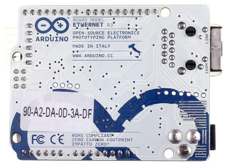
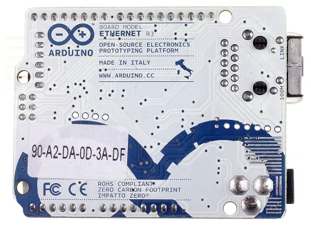

|
Arduino Ethernet - это устройство на основе микроконтроллера
ATmega328 (datasheet). В его состав входит 14 цифровых выводов,
6 аналоговых входов, кварцевый резонатор на 16 МГц, разъем RJ45,
разъем питания, разъем для внутрисхемного программирования ICSP,
а также кнопка сброса. Примечание: выводы 10, 11, 12 и 13
задействованы для связи процессора с Ethernet-контроллером и не
должны использоваться для других целей. Поэтому, при
использовании Ethernet-контроллера количество доступных выводов
уменьшается до 9 с 4 ШИМ-выходами. В качестве дополнительной
опции с платой может быть приобретен специальный модуль,
реализующий технологию Power over Ethernet (PoE). Данная
технология позволяет потреблять электрическую энергию через
витую пару в сети Ethernet. Arduino Ethernet отличается от
других плат Ардуино тем, что у него нет встроенного USB-UART
преобразователя, но есть Ethernet-контроллер Wiznet, который
также используется в Ethernet-платах расширения. Встроенный
MicroSD-кардридер позволяет хранить файлы, к которым можно
организовать сетевой доступ. Управление кардридером
осуществляется с помощью библиотеки SD. Вывод 10 используется
для взаимодействия с чипом Wiznet, линия SS для выбора SD-карты
соединена с выводом 4. 6-контактный разъем для программирования
совместим не только с USB-Serial адаптером от Ардуино, но и с
USB-кабелями от FTDI и аналогичными USB-UART переходниками от
Sparkfun и Adafruit. Разъем спроектирован таким образом, чтобы
обеспечивать возможность автоматического сброса микроконтроллера
во время прошивки - это освобождает пользователя от
необходимости вручную нажимать кнопку сброса. При подключении
USB-Serial адаптера, питание Arduino Ethernet осуществляется от
адаптера. 3 версия Arduino Ethernet (Rev. 3) удовлетворяет
требованиям стандартной распиновки 1.0: добавлены выводы SDA и
SCL (возле вывода AREF), а также два новых вывода, расположенных
возле вывода RESET. Наличие этих выводов обеспечивает
совместимость плат расширения, содержащих I2C-устройства, со
всеми моделями Ардуино; вывод IOREF - позволяет платам
расширения подстраиваться под рабочее напряжение Ардуино. Данный
вывод предусмотрен для совместимости плат расширения как с
5В-Ардуино на базе микроконтроллеров AVR, так и с 3.3В-платами
Arduino Due. Второй вывод возле IOREF ни к чему не подсоединен и
зарезервирован для будущих целей.
|
 

|